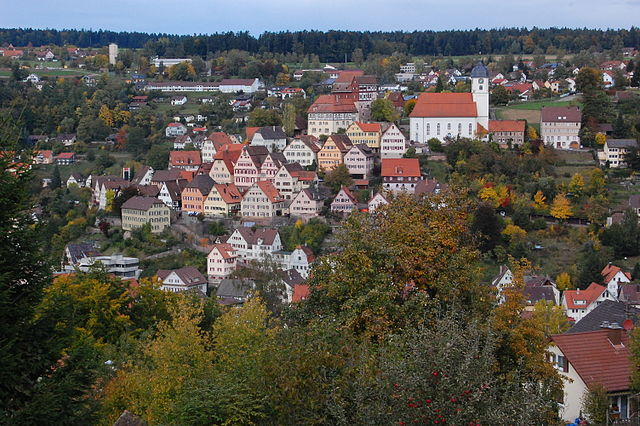

Schwarzwald
Alban Kraus, 5. 4. 2016
Wo?
- rechtsrheinisch
- (S) Bâle → (N) Karlsruhe: 150 km
- S → N: 50 km
- Land Baden-Württemberg
Geografie
- 6.000 km²
- Mittelgebirge (Feldberg 1493 m)
- Nordschwarzwald: Wald
- Mittleren Schwarzwald: Landwirtshaft
- Südschwarzwald: Gebirge, Seen, Höhenlandwirtschaft
- Nationalpark Schwarzwald
Gewässer
- Enz → Neckar
- Nagold → Enz in Pforzheim
- Murg → Rhein neben Rastatt
- Kinzig → Rhein neben Offenburg
- Brigach + Breg → Donau in Donau-eschingen
- Wutach → Rhein
+ Seen im Südschwarzwald
Wirtschaft
- Bergbau: Zink, Blei, Silber, Baryt, Fluorit, BiCoNi, Kobalt (Kinzigtal), Uran
- Forstwirtschaft :
- Holz für Schiffbau, Bauholz
- Auf dem Rhein exportiert
- Kohl, Glas, Pottasche
- Feinwerktechnik: Uhren, Schmucken
- Wasserkraftnutzung: Mühlen, Strom
Tourismus
- 140.000 direkten Vollarbeitsplätzen
- Wandern, Mountainbiken, Radwandern, Wassersport im Seen, Wintersport, Geocaching

Bilden
- Wikipedia, Naturraeumliche Grossregionen Deutschlands, Schwarzwald.png, CC-BY-SA
- Wikipedia, Yburg von Fremersberg (cropped).jpg, CC-BY-SA
- Wikipedia, Langbrunnen Welschensteinach 01 Kandelhöhenweg.jpg, CC-BY-SA
- Wikipedia, Belche-vum-Minschtertal.jpg, CC-BY-SA
- Wikipedia, Altensteiger Altstadt.JPG, CC-BY
{kind=link}
{kind=link}
{kind=link}
{kind=link}
{kind=link}